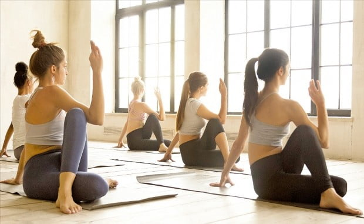
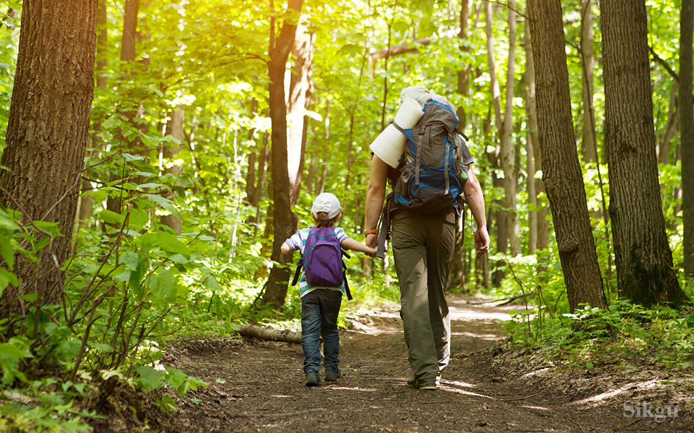

action
exercise
필라테스

필라테스는 신체의 전 근육을 과학적으로 단련하기 위해 만들어졌다.
신체 중 복부의 안정과 몸 전체의 균형을 추구한다. 또한 필라테스는 요가의 아사나와 다양한 체조의 동작 및 스포츠의 운동 동작을 결합하여 매트나 기구 위에서 수련을 한다.
그 결과 전신 근육의 균형적인 발달과. 신체의 스트레칭 능력과 혈액순환의 향상을 가져오게 된다.
등산

운동이나 탐험, 여가 활용 등의 목적으로 산에 오르는 것이다. 자연의 변화에 대응하고 자연을 이용하고 대처하면서 주어진 장애를 극복하는 것으로,
정복의 욕구를 채울 수 있는 레저 스포츠이다. 1786년 프랑스인이 알프스의 최고봉을 등정한 후부터 조직적인 등산이 실시되었다.
등산은 체력 단련과 정신 수양에 좋지만 위험이 따르는 운동이므로 협동심, 인내력, 희생 정신, 대담성, 침착성 등이 있어야 한다.
헬스
 요가의 건강상의 효과는 요통 완화에 도움이 된다.
관절염 증상을 완화할 수 있다. 심장 건강을 돕는다. 스트레스 완화를 돕는다.
숙면을 돕는다. 기분 개선을 돕는다. 유연성을 높인다. 체중 감량을 돕는다.
요가의 건강상의 효과는 요통 완화에 도움이 된다.
관절염 증상을 완화할 수 있다. 심장 건강을 돕는다. 스트레스 완화를 돕는다.
숙면을 돕는다. 기분 개선을 돕는다. 유연성을 높인다. 체중 감량을 돕는다.
요가의 건강상의 효과는 요통 완화에 도움이 된다.
관절염 증상을 완화할 수 있다. 심장 건강을 돕는다. 스트레스 완화를 돕는다.
숙면을 돕는다. 기분 개선을 돕는다. 유연성을 높인다. 체중 감량을 돕는다.